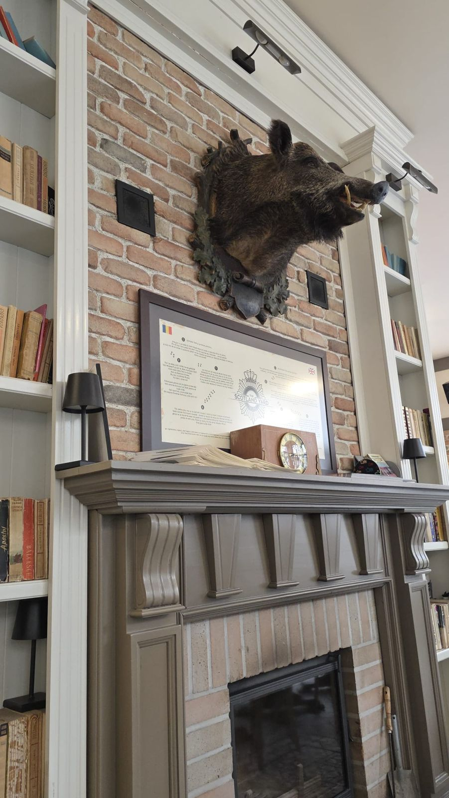
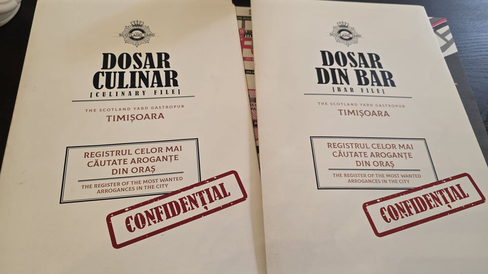
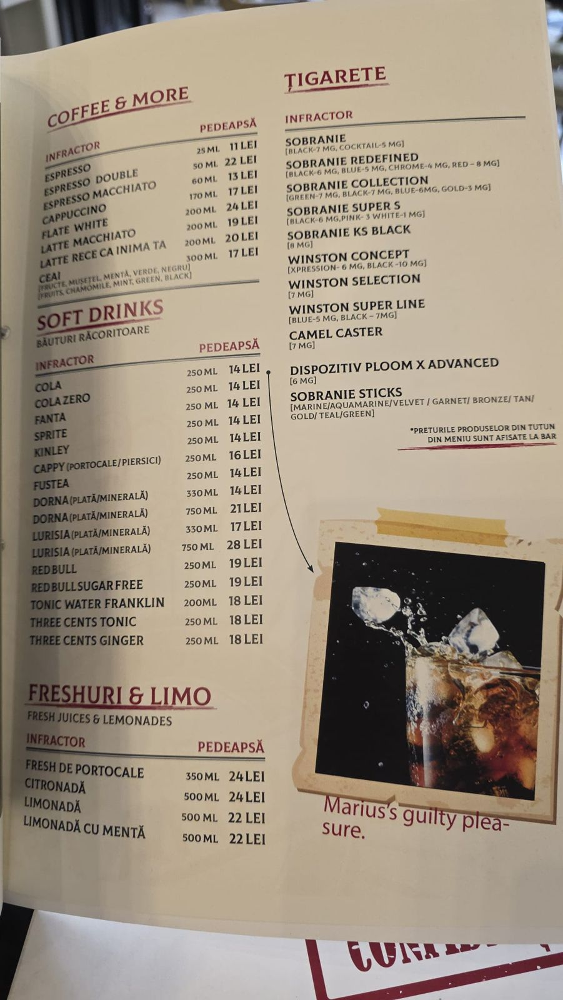
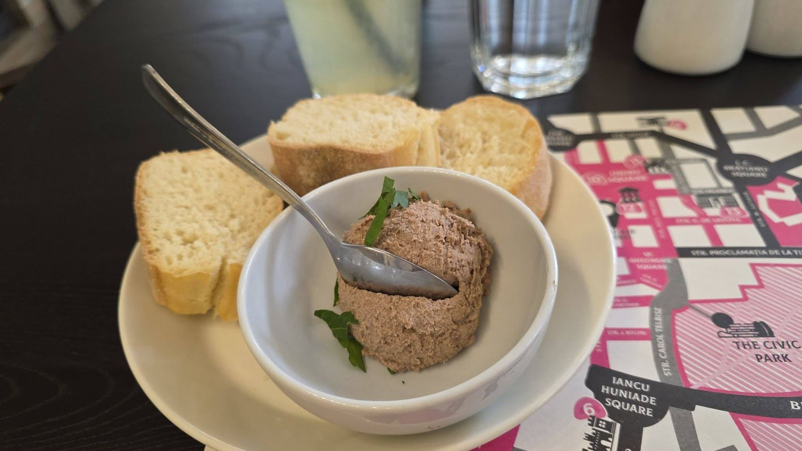
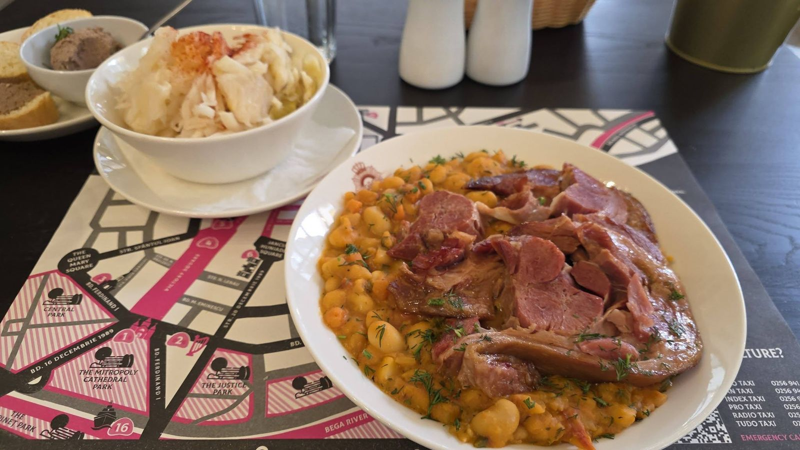

Journey 01 · Timișoara Note 6 of 11 Field Note
Culture and Restaurants and Liver
Oh, my
I am still learning how to eat here.
This sounds far more dramatic than it actually is, but it’s more about timing and unspoken cultural norms. The first few times I went to a seated restaurant here, I hovered awkwardly near the entrance, unsure of what to do. If a place even has a host stand, it is often abandoned, sitting empty and alone, except for me, the lone American, standing beside it. Groups of people often gather near the entrance to talk, review a posted menu or to smoke, so my hovering wasn’t out of place. With the general European unspoken culture of leaving people to their own devices unless they look truly distressed, my mild befuddlement was likely glanced at but no one approached me to offer unsolicited advice.
How to Use a Restaurant 101
I have been fortunate enough to start to make connections now, and I have learned that here, you do not wait at a host stand to be seated when you go to a restaurant. There will not be a sign saying “seat yourself”, because the standard is understood to be exactly that.
So, if there are empty tables or a free chair, then come on in. Some one will be with you soon. And if there is not? Come back later. I felt somewhat silly not having figured it out before on my own, but now I know the script: You sit. You wait. Someone comes to you. There is no rush, either to secure your order or to turn over your table. Enjoy your meal, enjoy your stay.
Try the grey stuff, it’s delicious
Finding myself deep in the tourist area of the city, I found a place for lunch. Let’s start with how delightful it was to walk into The Scotland Yard, find a seat under a giant boar head, and have the menu’s marked as confidential case files. Inside, like many places, there was also a cigarette menu. Smoking is no longer allowed inside bars, cafes and restaurants, but the culture is alive and well.



I greeted the waitress, and asked her “I am new here, what is popular? What is the recommendation?” She was delighted and asked me whether I wanted the tourist recommendation, or the local recommendation. I had already perused the menu and saw the huge number of delicious looking burgers, and assumed that these were likely to be the top of the tourist list.
“Local recommendations, please!”
Wonderful. She suggested and I agreed, to two dishes: Iahnie fasole cu ciolan afumat and salata varza murata. Having no idea what either was, I placed all my faith into her hands, and waited my fate.
But before my meal arrived, I was treated to a house specialty. A grey pate came out, with lightly toasted bread. “It’s very good!” I was assured, but looking at it I already knew before I was told what it was “This is a house specialty – chicken liver pate!”

I did eat some of the liver, because I am polite. And it was not terrible – in fact, if you like liver, I highly recommend this dish. But, my dislike of liver is now officially international: some preferences apparently travel just as well as I do.
My food came shortly after my one-and-a-half toast attempts at enjoying the pate and I finally saw what I ordered.

This was a meal shaped by winter: Iahnie fasole cu ciolan afumat is bean stew with smoked ham, a very traditional Romanian dish. Here, it is made with smoked pork shank and beans in a tomato ragout with root vegetables. Just looking at the picture, I can remember how it made me feel from the first bite. Warm and cozy, a deep feeling of home, sitting at a heavy wooden table while it snows outside.
The dish was delicious and my only complaint was that it was such a heavy dish for the late afternoon – I had plans for late night, and this dish made me want to eat my fill then snuggle up in bed and fall asleep. Would I get it again? Not only yes, but it has been added to my list of dishes to learn how to cook before I return home.
The side dish that comes with the Iahnie fasole cu ciolan afumat was salata varza murata, a Romanian version of Sauerkraut. This is a pickled cabbage salad, and the flavor is refreshing and light – tartness rather than sourness, a welcome lightness to the heavier flavors of the stew.
Here is what I have since learned about Salata Varza Murata:
- Romanian sauerkraut uses a wet brine (water+salt) and not a dry (salt only) brine
- The cabbage is usually fermented whole, or halved/quartered, not shredded. This preserves the cabbage leaves, which are then used for Romanian cabbage rolls
- Depending on the local area and family tradition, dill, garlic, bay leaves and peppercorns may be added to the brine. The cabbage sits in the brine for some 4 weeks.
- Only after brining is the cabbage shredded. To make this dish, it is then lightly tossed with good olive oil and pepper or paprika.
I am not typically much of a sauerkraut lover, but this is the second time I have had this cabbage salad and I really enjoy it.
Lessons from Food
What surprises me most each time I go out are the expectations I unconsciously carry around food: how quickly it should arrive, how attentive a server should be, how soon I should leave.
Food, like coffee, operates on its own tempo here. It assumes a patience I am not accustomed to, but one I am rewarded for with each new experience.
Originally published at fieldnotesfromabroad.com/2026/03/03/culture-and-restaurants-and-liver/